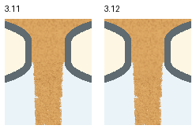
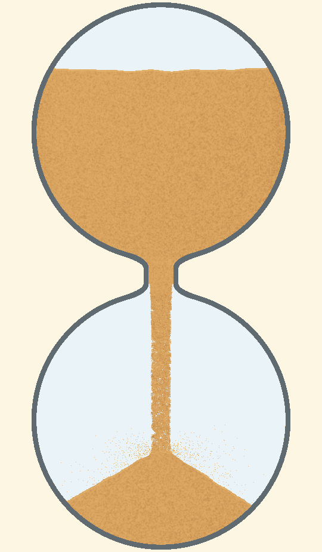

未发布的本地草稿：正式版本编号按远端3.11递增为3.12；本目录保留当时测试身份与失败历史，不能作为当前发布决定。
3.12 颈部与沙柱的材质过渡
续审未通过：用户反馈及原生图测量确认出口快速变细。原局部通过结论已重新打开。查看问题与测量。以下保留此前改动及检查，不能作为当前放行结论。
颈内和刚流出的沙共用取色、光照及细纹规则，再在约0.75个净口径内逐渐转为原来的独立粒纹。仅渐退原有2像素重叠，粒子形状、透明度、轨迹、数量、颈宽与3.3飞溅保持。静态材质回退时关闭这项过渡。



实际运行录像
真正隐藏的PC窗口，独立设置目录。5秒和50秒均含暂停、恢复及落定；无声。录像记录真实时间，画面采集负载不用于判断帧率。
复审结论与范围
独立审核实际查看正常尺寸关键帧、六配色及粗细档，并检查5秒录像8个、50秒录像5个连续12帧窗口，另看8～9秒3个窗口。未见本次引入的固定横向材质线、接缝下移、暗圈、新实心罩或恢复后整片跳样。未完整原速播放，有限连续窗口也不证明每颗沙粒全程都已追踪。
70项相关纯测试通过。真实着色器专项有6张同态图、33条断言：共享取色与实际颈内像素一致；关闭颈流时新旧全图一致；删除禁用条件的负例被检出。6组新旧状态完全一致，像素变化限制在出口局部；暂停像素及物理状态保持。另有53帧状态矩阵与61帧连续GL原图。数值检查不替代上述外观复审。
原有的开局前缘偏平、短周期涨堆偏快、出口较快收窄、柱内局部空洞和近满小平台仍保留。本次只确认出口材质过渡改善，不宣布整体沙流自然，也不代表Android、音频或性能验收。
独立代码审核找出的“静态回退仍启用动态过渡”问题已修复并用正反对照重查。初次辅助范围脚本混用PNG与Kivy纵坐标的工具失败也保留，修正坐标后沿用原范围重查；没有放宽外观标准。
本轮证据清单 · 独立外观复审 · 独立代码复审 · 实施计划 · 保留的3.11失败证据